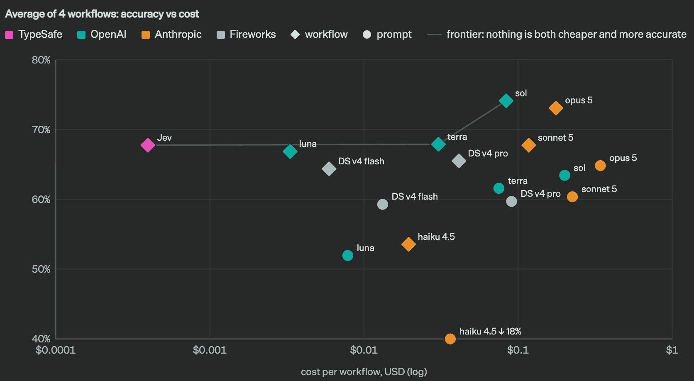
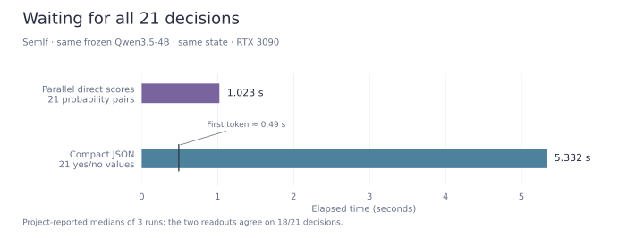
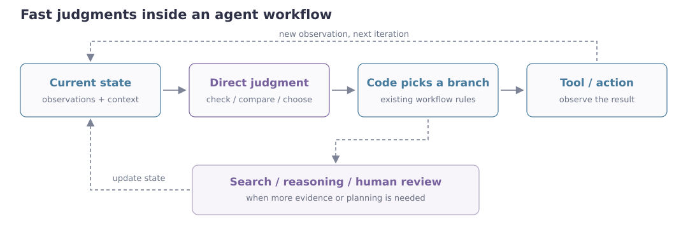

Jev, TypeSafe’s new decision model, has attracted considerable attention. Its promise is to make the decisions that software needs without generating a written answer first. To understand what that means, we should start with what a program asks the model to do.
We send the current state, the questions, and the allowed answers. It returns decisions and probabilities the program can branch on. [2] If the workflow is already written, that is often all it needs.
For a workflow that makes many such decisions, both latency and cost matter. In TypeSafe’s published results across four workflows, Jev is about as accurate as Terra, averages 0.4 seconds against Terra’s 10.1, and costs much less. [1] [9]

These results raise a practical question: when a program only needs a few choices or scores, how much work do we add by asking an LLM to generate them as text? We can examine ways to score candidates directly, then look at how their probabilities can be trained and used in an agent.
Scoring candidates directly
JEV is not specified well enough to reproduce. What follows is how similar interfaces are usually built, plus two independent open-source projects. None of this is a claim about JEV’s internals.
One way to expose this kind of interface is the GLiClass family [4] [4] and the classification branch of GLiNER2 [5]: a BERT-style bidirectional encoder reads the text together with the candidate descriptions, then a head reads scores off the representations.
A GLiClass-style joint encoding puts the state, the question, and the candidates through the encoder, then compares a text vector \(h\) with candidate vectors \(e_k\):
Because the descriptions arrive with the request, the label set can change every call. The model still has to understand the question and compare the options. It just returns scores instead of a paragraph.
Scoring with an off-the-shelf LLM
We can also use an ordinary language model to score candidates. Assign each option a label such as A, B, or C, and read the corresponding logits at the answer position. Choosing the highest-scoring label is equivalent to greedy decoding restricted to those labels; keeping all the scores also lets us rank the options or normalize them into a probability distribution.
This idea predates Jev. Constitutional AI uses the log-probabilities of A/B answers to construct soft preference labels. [13] SteamSHP scores a response using the probability or logit of label A. [14] LlamaRec reads candidate-letter logits to rank items in a single forward pass. [15]
The saving is not from reading logits instead of generating one letter: both require computing the scores at that position. It comes from avoiding additional decoding steps for explanations, structured text, or a ranked list. For a program that only needs candidate scores, those extra tokens may be unnecessary.
The independent projects eve-rlcd and SemIf both use this approach with causal language models. eve-rlcd starts from Qwen3-0.6B-Base and dots the last hidden state with the LM-head rows for the 26 letter tokens A–Z. [6] SemIf’s main runs use a frozen Qwen3.5-4B with no extra training: full vocabulary logits at the last position, then the candidate letters. [11]
Both also cache the shared state. They put it first, compute its KV cache once, and batch the question suffixes against that prefix. [6] [11] The questions do not depend on each other. Ask the model for an array, though, and the output still has to come out token by token. Direct scores let independent questions run in parallel; prefix reuse means the long shared context is computed once.
SemIf has a clean comparison: same model, same state, same 21 binary questions. Parallel direct scoring takes about 1.02 seconds; generating a compact yes/no array takes about 5.33. The generated answer already drops explanations and field names. The first token shows up around 0.49 seconds, but the program still waits for the rest of the array. [11]

The two readouts agree on 18 of 21. The speed gain is clear. Whether the decisions are any good still needs an eval with reference answers. [11]
On the independent JevBench leaderboard, SemIf is already close to Jev on standard and answer-judging tasks, but still trails on harder items and calibration. [12] The more useful fact is that it gets there with no extra training. A frozen model already makes enough of these calls to be worth trying before a specialized decision model exists.
What might RLCD be doing?
Once you have scores, a program often still has to decide: continue, or hand off to a person. That only works if the model’s stated confidence matches how often it is actually right. TypeSafe calls the training aimed at that Reinforcement Learning for Calibrated Decisions, or RLCD. [7]
TypeSafe has not published JEV’s reward. The independent eve-rlcd project does publish one. For a question with a single correct choice \(y\), let \(p\) be the predicted distribution and sample \(a\sim p\). Write \(c=1\) if the choice is correct and \(0\) otherwise. The reward is \(r=c-p_a\), treated as a constant when the policy gradient is computed. [6]
We can work out the average update by summing over every possible choice. Write \(c_a=\mathbf 1[a=y]\): only the correct choice has \(c_a=1\). Each choice is sampled with probability \(p_a\), so its contribution is weighted by \(p_a\). Here \(\operatorname{stopgrad}\) leaves the reward's value unchanged but prevents differentiation through it; only \(\log p_a\) is differentiated in the policy-gradient update.
Using \(\nabla_\theta\log p_a=(\nabla_\theta p_a)/p_a\), the sampling probability cancels the denominator:
The first sum keeps only \(a=y\), which gives \(\nabla_\theta p_y\). To see why the whole expression is a squared-error gradient, let \(e_y\) be the one-hot target, with entries \((e_y)_a=c_a\). Expanding its squared distance from \(p\) gives:
Under this reward, policy-gradient ascent is, in expectation, gradient descent on squared error between the predicted probabilities and the one-hot label. The loss in the display is half the multiclass Brier loss, or \(K/2\) times MSE averaged over classes.
Using it in an agent
If scores can be read directly, and the probabilities are trustworthy enough, an agent whose branches are already in code does not need a paragraph first. The available actions are already implemented. What remains is reading the latest material and choosing which branch applies. That still takes understanding. It does not always take replanning the whole task. A short option list can still be a hard question; when the evidence is thin or the plan is wrong, the workflow still needs a way to search and think.

If those judgments are reliable enough, latency also changes how often you check. A ten-second call is hard to justify after every tool result. A few hundred milliseconds makes it reasonable to look again and correct the next step before the workflow drifts. The time you save need not all go to finishing sooner; some of it can go to checking more often.
Demo Hype
There are already attempts in this direction, but we should be careful with demo hype. Take rmalde's Minecraft agent, whose author reports beating the Ender Dragon for less than $1 in model costs. Reading the code shows how much of the behavior is already designed: the route is surveyed in advance, rules filter the available actions, Mineflayer handles pathfinding, and attack timing and safety checks run inside scripted actions. A separate model provides high-level plans; Jev chooses from the remaining options, sometimes just one. [16]
A low inference bill does not mean the system took little work to build, nor that Jev supplied the capabilities we see on screen. Much of the task-specific behavior is already in the surrounding code. Presenting the whole result as Jev's ability overstates what this demo establishes. Whether Jev improves on a rule-based selector, with the same planner and action code, still needs testing.
References
- [1]
- [2]
- [3]
- [4]
- [5]
- [6]
- [7]
- [8]
- [9]
- [10]
- [11]
- [12]
- [13]
- [14]
- [15]
- [16]